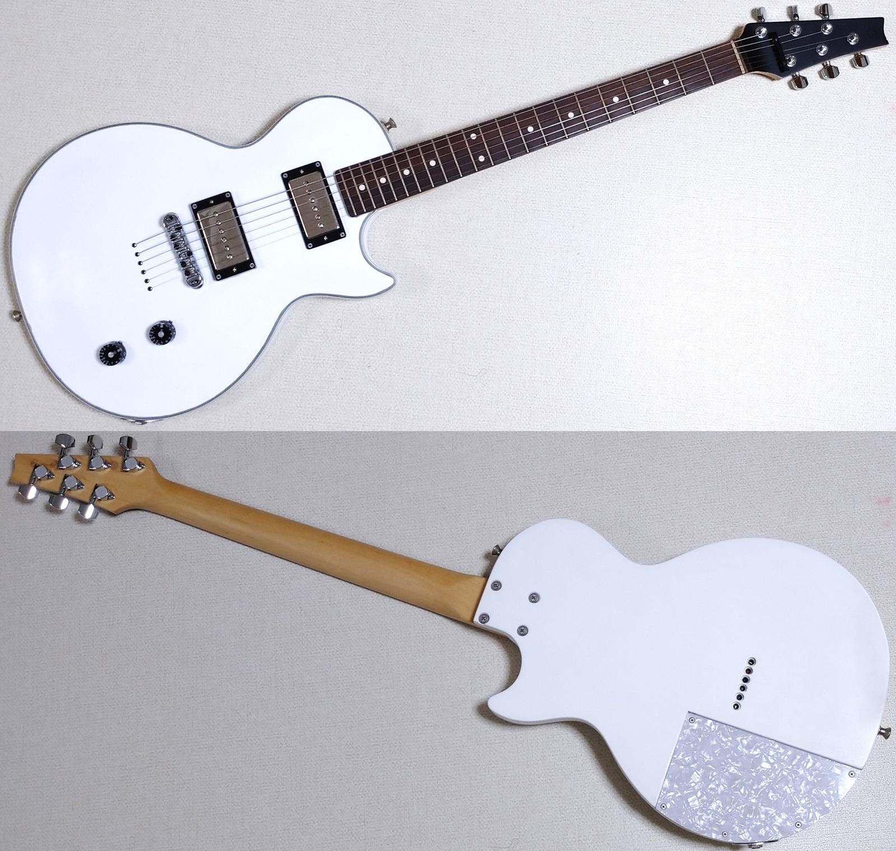

レスポールタイプ改造ギター メモ
2024年06月07日 カテゴリー：ギター関係

【ネック】
アトランシア製 メイプル ローズウッド指板300R ロングスケール（648mm 25.5inch）
グリップ：Uシェイプ
ナット幅：42mm
エンド幅：56mm
トラストロッド：ヒール側（十字ナット）
塗装：ラッカー サテンフィニッシュ
ナット：TUSQ
テンションバー：SCUD SR-GB475B
ペグ：GOTOH SG301-MG-01-L3R3-Chrome
【ボディ】
2005年購入のEpiphone Les Paul Customがベース
→ ネック切除、ボディを半分に薄く切り、裏にマホガニー板を接着
塗装：ポリウレタン ホワイト サテンフィニッシュ
導電塗料：SONIC SP-01 Water-Based Shielding Paint
ブリッジ：ロッキングローラーブリッジ（クローム）
ネックジョイントプレートなし、M4ローゼットワッシャー使用
弦裏通し、ボディトップストリングガイド（クローム）使用
ピックアップ：SEYMOUR DUNCAN SPH90-1n／SPH90-1b（ロータリースイッチで切替）
ポット：SONIC FV-22 FULL-UP VOLUME POT A500kΩ
ストラップピン：JIM DUNLOP ロックピン
全体の重さ：3.0kg
弦：DADDARIO EXL110 .010 .013 .017 .026 .036 .046
弦高：1弦 1.8mm 6弦 2.5mm
ピックアップポールピース高さ（22フレットを抑えた状態）：
フロント1弦 3.0mm リア1弦 2.0mm
フロント6弦 4.0mm リア6弦 3.0mm
各弦ポールピースのバランス → 2弦一番低く、1・3・6弦同じ高さ、5弦少し高く、4弦さらに高く（このページを参考に）
【メンテナンス用品】
指板クリーナー：TRICK TP11 Fretboard Cleaner
指板クリーナー・保湿：BIGBENDS FRET BOARD JUICE 1oz
ナット・サドル潤滑剤：Freedom Custom Guitar SP-P-08